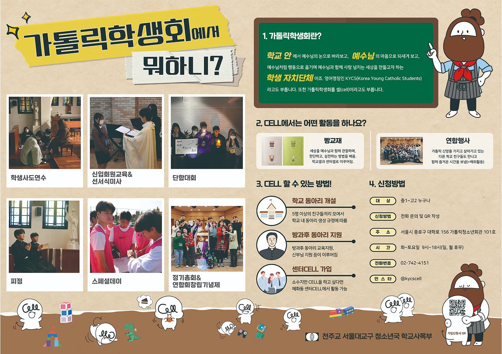

가톨릭학생회는 1961년 정식으로 서울대교구 인가를 받아 시작한 단체입니다. 세상에서 일어나는 현상들을 예수님의 눈으로 바라보고, 예수님의 마음으로 되새겨 보고, 예수님처럼 행동으로 옮기며 사랑 넘치는 세상을 만들고자 운동을 벌이는 학생 자치단체이죠.
1979년 '국제가톨릭학생회' (IYCS-International Young Catholic Students)에 가입하면서
영어명칭인 KYCS(Korea Young Catholic Students)라고도 부릅니다.
또한 가톨릭학생회를 셀(cell)이라고도 부르는데요, 셀은(cell)은 모든 생물의 기본단위인 세포를 뜻합니다. 가톨릭학생회도 기본단위인 소그룹 모임을 가지면서 마치 세포가 분열하듯이 주변 사람에게도 예수님의 모습을 전하며 세상에 그분의 선한 영향력을 펼쳐 나간다는 뜻이 담겨 있습니다.
언제나 여러분에게 목말라있습니다. 함께 해 주실 거죠?